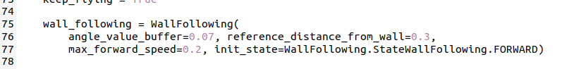

实验 6: 复杂地图飞行与建图
Complex-map Flight and Mapping
一、实验目标
继续熟悉cflib库中multiranger传感器相关的编程方法。
使用multiranger传感器实现更多有趣的飞行任务
二、实验准备
之前已经配置好连接到无人机的客户端的虚拟机系统。并且需要具备前几门实验已经积累的linux系统操作经验。再需要一点的python编程基础。
本实验中需要用到的硬件设备：
- Crazyflie 2.0
- Crazyradio PA
- Flow deck
- Multiranger deck
三、实验步骤
本次实验将主要进行python脚本的运行，编程库参考资料已保存到course-materials：course-materials/01_web_snapshots/10_bitcraze_cflib_user_guides.html。
若在进行实验中遇到一些困难，也可打开上述资料包网页快照进行进一步参考。同时部分操作和知识要点也在上节课的实验手册中有提及，如有不会的地方可以再参考上节的实验手册，这部分操作这节实验手册不再赘述。
实验一：walk follow the wall
该实验为上节课的拓展实验，现在给出代码中可以调节的参数，同学们可以再修改参数试验一下运行的效果。
将该节课附上的wall_following.py和multiranger_wall_following.py拷贝至虚拟机中。其中将multiranger_wall_following.py放在workspace目录下，在workspace目录下再新建一个名为wall_following的目录，将wall_following.py文件放入其中，以完成multiranger_wall_following.py文件运行所需要的依赖。
如下图所示，在multiranger_wall_following.py文件中的75到77行

在初始化实例的这个过程中，第一个参数angle_value_buffer这个参数控制着无人机判断角度的容差，这个值越大，无人机反应越迟钝，但路径会相对顺滑，这个值越小，无人机反应会越敏捷，路径抖动也会更多。Reference_distance_from_wall这个值控制无人机期望的距离墙面的最近距离，单位为m，这个值越大，无人机离墙面越远。max_forward_speed这个值则代表无人机最快的前进速度，单位为m/s。同学们可以稍微修改这几个参数，观察无人机的飞行路径是否有显著的变化，但在这个过程中一定要注意参数的合理性，数值不要过于极端，保证飞行安全。
实验二：更多方案的避障飞行
现在大家已经能熟练掌握光流传感器和避障传感器的使用方法了，接下来按照下图所示的障碍地图环境，让无人机从A区域起飞，整个流程中无人机的飞行高度不要超过0.4m，探索整个地图，也就是一路飞行不要碰撞到墙壁，直到在B区域内降落。现在同学们已经掌握了motioncommander和multiranger的编程方法，想一想，这样的地图环境用什么样的编程方式，从逻辑上可以更高效地完成这个事先已知的地图环境中的固定飞行路线任务。
注意，这个实验的内容会和最终考核的部分内容有关联，这个实验希望提升和检验同学们编程的熟练度，以及如果用更巧妙的代码逻辑来实现这类任务，则会使大家的实践考核结果锦上添花。

实验三：手动控制飞行建图
将本节课附带的multiranger_pointcloud.py文件放入workspace中，该python脚本可直接运行。如下图所示，该程序的主要功能为crazyflie无人机在障碍环境中使用multiranger模块进行周边障碍物的点云地图建图。

运行该程序后将会使用键盘手动操控无人机在障碍环境中进行飞行感知周边环境，使用方向键控制无人机的飞行方向，无人机会升高到默认的0.3m的高度，慢速控制无人机的转向为a和d键，快速控制无人机的转向为z和x键，由w和s键控制高度。由于multiranger的采样速度有限，因此如果无人机的飞行动作过快，采样出来的环境地图很可能不清晰，因此如果想要得到更清晰的点云地图，可以稍微放慢无人机的飞行速度以获得更清晰的点云地图。

现在运行这个程序，对这节课的地图障碍构建出一个清晰的点云地图。